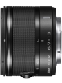

采用11片4组的镜头结构，内置非球面镜片和ED镜片。镜筒采用金属制造，等效焦距为18-35mm，内置减震（VR）功能和7片光圈叶片。
此鏡頭上市半年多了，這才第一個點評，可見此頭有多冷門。
等效18-35的超廣，這玩意還沒135的標頭大，一包煙似的重量。往口袋一放，多帶一個焦段毫無壓力。 本來只為了補齊焦段，入手後為其表現嚇了一跳。 色散，耀光，高光反差，畸變跟邊角表現都是一流貨色。 小小的身軀裡塞了三片ED，三片非球面，臆測這是nikon為了挽救惡評如潮的1系痛下苦功製造的鏡頭，除了沒有恆定光圈外，成像品質不輸金廣跟12-24等老大哥。 完全無變形，不輸CY D21的邊角品質， 配上cx片幅在大光圈時的景深，這是廣角場景的隨身利器。
唯一美中不足就是非恆定光圈了。 這麼小一個塑料鏡頭四千多人民幣，價格實在不算實惠。 而且很難入手。幾本上都得訂貨。 估計是1系太過冷門的關係，此鏡沒什麼人用。 Nikon 1系還能撐多久，沒人知道。